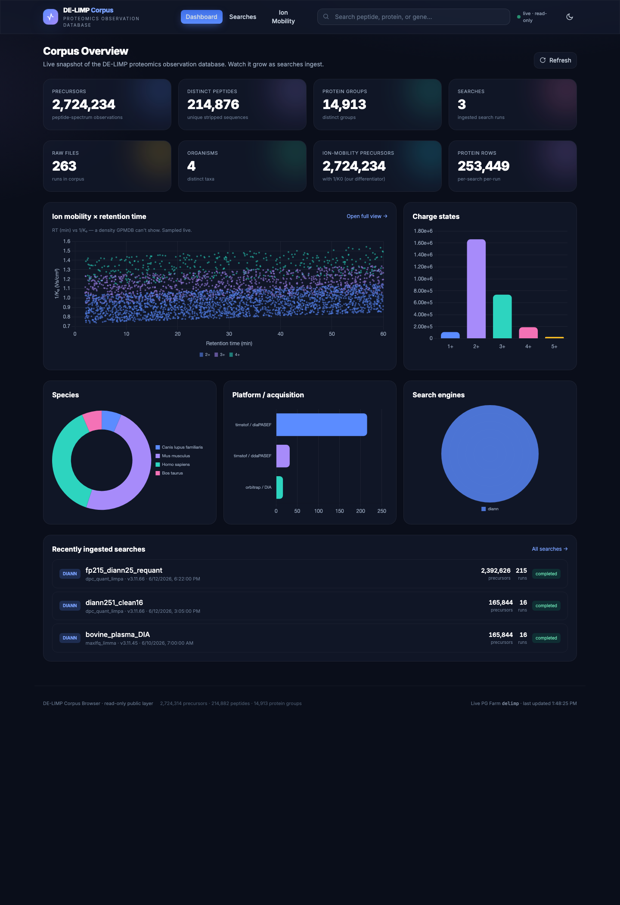

FRAN is a read-only window onto a growing data-independent-acquisition proteomics corpus — browse by peptide, protein, gene, organism, or run and see real MS2 spectra, XIC chromatograms, ion mobility, and ML-predicted fragment intensities & flyability.

Public peptide repositories are built on DDA. FRAN is deliberately DIA-only, which lets it carry things DDA archives can't: cross-run indexed retention time (iRT), the ion-mobility (1/K₀) dimension, and the full fragment & chromatogram data behind every quantification — kept for reuse, QC, and AI training.
Modified forms × charge, per-run RT / 1/K₀ / m/z / q-value / intensity, and a plain-language summary of what the peptide's proteins do.
Dual-pane chromatograms (MS1 + quant fragments) and predicted-vs-acquired mirror spectra from Koina (Prosit, AlphaPeptDeep, ms2pip).
An IM × iRT map across the whole corpus — the timsTOF dimension GPMDB never had — toggling to an iRT × peptide-count view.
Koina PFly scores how readily each peptide ionizes & is detected, plotted against its observed intensity across the corpus.
Sequence-mapped coverage, per-search/run stats, organisms, and STRING interaction links.
Read-only sessions and a strict table allowlist: the public layer structurally cannot reach internal or customer data.
Counts grow as new searches are ingested.
Open FRAN →